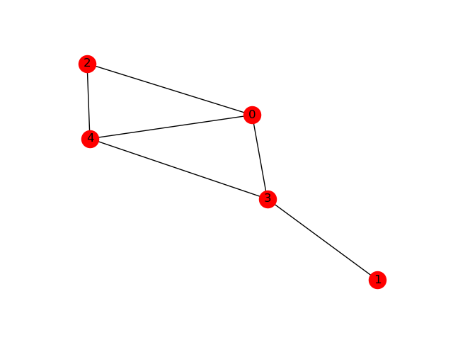
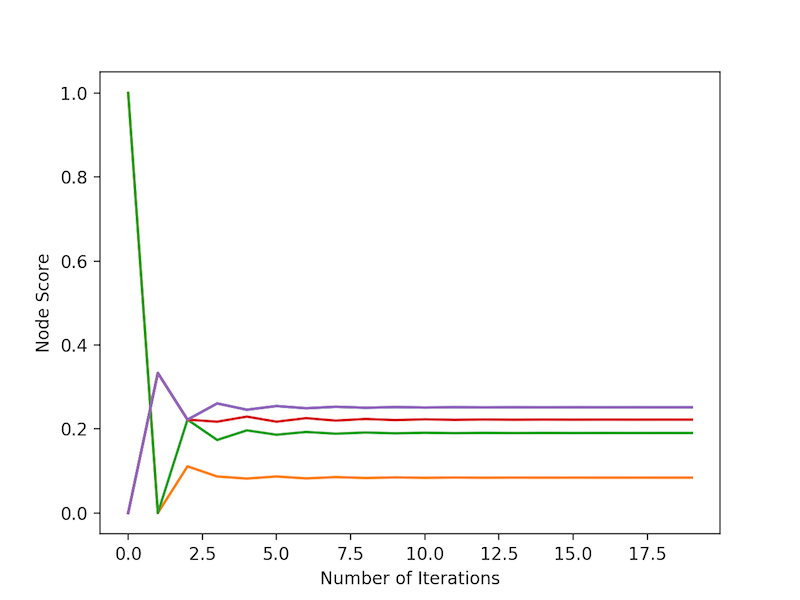

In writing the current paper I’m working on, I have decided to adopt a semantic versioning scheme for each draft of the paper. There’s probably a ton out there, and I think I got a bit fed up with other versioning schemes where people tag on _INITIALS to the end of the file. Moreover, I found value in tracking the evolution of the paper - in other words, how does the final product look compared to the original? Therefore, I thought, why not adopt a numbering system that semantically makes sense, the same way that it works for code?
Shamelessly copying http://semver.org, here’s my proposed scheme.
Given a version number MAJOR.MINOR.PATCH, for a prose body of text, increment the:
I will note that formatting is intentionally not dealt with here, but is assumed to be part of the MAJOR version increment when formatting a manuscript for submission. This is because a writer ought not to be concerned with formatting in the writing stages. A writer ought to be most concerned with getting his/her thoughts into prose form.
Now, for the figures, which I believe should be developed in parallel but separately from the text.
Given a version number MAJOR.MINOR.PATCH, for a document that lays out the organization of figures, increment the:
So far, I have tried to keep the figure versions in sync with the text versions to keep things really simple. This system has worked well, as I usually do an export of both the text and the figures at the same time, incrementing whichever needs to be incremented accordingly. When this first manuscript is done, next steps would be to run a ‘diff’ to see how the final version differs from version 0.1.0. Can’t wait for that to happen!
Did you enjoy this blog post? Let's discuss more!
I recently read a review paper on network propagation. It looks like a very useful thing in data science, particularly where networks are involved, and I wanted to share it with everybody.
Before I go on, I will start off by assuming we have a dataset modelled as a "network", or a "graph", in which the nodes are entities in the graph, and edges are relationships between those entities. In the context of my work, I encounter biological networks of many kinds - gene-gene interactions, protein-protein interactions, protein-RNA interactions, evolutionary networks, and more.
What kind of problems can network propagation solve? The problem class generally follows this logic: I start with some nodes of interest, and I'm most interested in finding other nodes of interest based on these "seed" nodes. Knowing that path-based methods can often end up over-prioritizing highly connected nodes, we need a different principled method for finding these nodes. One way would be to take a random walk on the graph, and find out how often we land on a particular set of nodes on the graph. This random walk is what we call "network propagation".
Network propagation follows this intuition: Imagine nodes contain information, and edges dictate which nodes information can be shared with. Network propagation shares the information with other nodes, according to the following rules:
An animation of how this works is shown below.
If you take my DataCamp course, you'll learn that networks can be represented as matrices on a computer. The adjacency matrix can be a 1/0 (i.e. binary) matrix that describes how nodes (rows and columns) are connected, and nodes can have their own vector of information (i.e. whether they are "seed" nodes or not). As it turns out, network propagation has a very nice matrix representation:
So, how do we do network propagation with NetworkX, numpy and Python? Let's take a look at code. Firstly, how do you convert a graph to a numpy matrix?
# Assume we have a graph G. Convert it to a numpy matrix. In [1]: A = nx.to_numpy_matrix(G) In [2]: A Out[2]: matrix([[ 0., 0., 1., 1., 1.], [ 0., 0., 0., 1., 0.], [ 1., 0., 0., 0., 1.], [ 1., 1., 0., 0., 1.], [ 1., 0., 1., 1., 0.]])
This basically corresponds to the following graph:

Great! Now, let's mark out some "seed" nodes. These are the "nodes" of interest. To represent this, we use a binary vector - each slot in the vector represents one node in the graph. Let's start by highlighting two nodes, the second and third one:
In [3]: M = np.array([0, 1, 1, 0, 0]).reshape(A.shape[0], 1)
The .reshape(A.shape[0], 1) is done for convenience, so that each axis is aligned appropriately for the following matrix multiplication:
In [4]: A @ M matrix([[ 1.], [ 0.], [ 0.], [ 1.], [ 1.]])
After the end of one round, nodes 2 and 3 have no information held on them, but their neighbours do. Let's do two rounds of propagation, rather than just one.
In [5]: A @ (A @ M) matrix([[ 2.], [ 1.], [ 2.], [ 2.], [ 2.]])
After two rounds of information, information is shared back with the original nodes, but not necessarily evenly - it all depends on the connectivity of each node.
It'll get really verbose doing 100 rounds; imagine doing A @ (A @ (A @ (A @ .....))). Instead of doing that, a recursive function may be better. At the same time, with many rounds of network propagation, we will end up with really large numbers. Therefore, it will be helpful to also normalize the result of matrix multiplication.
In [6]: def normalize(arr): ...: return arr / arr.sum() In [7]: def recursive_propagate(A, M, n): ...: if n > 0: ...: return recursive_propagate(A, normalize(A @ M), n-1) ...: else: ...: return normalize(A @ M) ...:
On a previous blog post, I've alluded to the fact that recursive functions are pretty darn useful!
So, let's take a look at the result of a few rounds of propagation.

The first thing that I'd like to highlight is that the information propagation process converges on a final result fairly quickly. The second thing I'd like to highlight is that the purple nodes (there are two lines!), which weren't highlighted at the start, ended up having the highest propagation scores, followed by the red node.
For those who are familiar with Markov chains, I believe network propagation has strong parallels with that.
Network propagation is conceptually simple, and easy to implement in Python.
Did you enjoy this blog post? Let's discuss more!